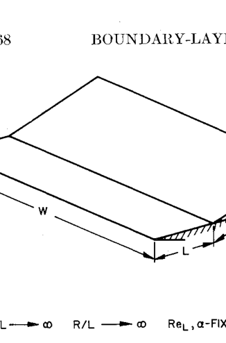
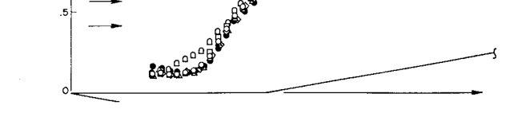
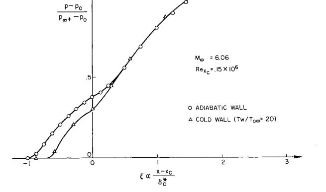
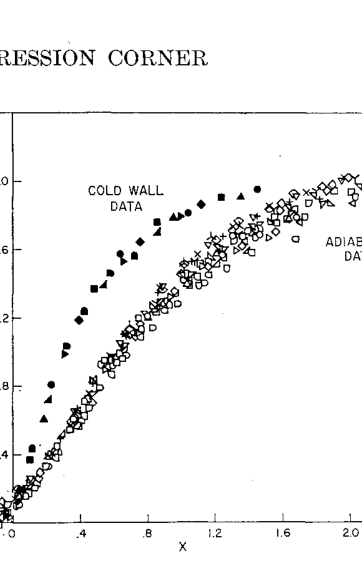

01中文摘要
在GALCIT M=6风洞和JPL M=4风洞中实验研究压缩拐角层流边界层分离，重点是建立近似真实二维、可切换强冷却与绝热壁的模型。测量模型表面压力与温度，并用皮托耙测量边界层。将绝热壁压力分布与Lees-Reeves理论（经Klineberg-Lees修正）比较；比较冷壁与绝热壁层流干扰，并观察层流与转捩干扰对雷诺数的依赖。Chapman自由干扰相似对绝热情形是良好近似，但不能把冷壁与绝热情形关联起来；Curle提出的标度可消除这一缺陷。
02阅读说明
实验研究（风洞实验），AIAA Journal 1968, Vol. 6, No. 1；材料为8页PDF全文与15张抓取图件。PDF第1页含前一篇论文结尾，本文正文从该页下半开始。文字层基本完整，但公式OCR多处乱码，已用PDF第5–7页原图核对关键公式。图件已抓取，未逐图像素核对。定量结果多以图给出，正文表格化数值较少，部分数值只能读到图注级信息。 文章类型：期刊
03一句话核心与三句话摘要
M∞=4–6压缩拐角实验表明，冷却缩小层流分离尺度并改变自由干扰标度，Chapman标度不适用于冷壁。
- 此前高冷壁分离实验几乎都在暂冲设备中进行，无法与绝热工况直接对照；二维性与层流性也未同时被实验证实。 AI概括
- 在GALCIT M∞=6.06与JPL M∞=4.00连续风洞中，用带侧板的平板-斜坡模型和stovepipe模型测量表面压力、温度及皮托/热丝剖面，覆盖Re_xc=6.8×10^4–1.0×10^6，对比绝热与冷壁。 AI概括
- 冷却使分离尺度约随位移厚度减小、上游影响额外减弱并降低整体压力水平；绝热层流压力分布符合Lees-Reeves理论，Chapman标度不能关联冷壁，而Curle标度可消除该偏差。 AI概括
04核心内容清单
| 要点 | 类型 | 重要性 | 原文依据 | 属性 |
|---|---|---|---|---|
| 目标：测量冷却对高超声速压缩拐角层流分离/再附的影响；缺口是此前冷壁实验均在暂冲设备中进行，无法与绝热对照。 | 研究目标/缺口 | A | PDF第2页（Introduction）；摘要PDF第1页 | 原文明确 |
| 二维性通过侧板/围栏、stovepipe和展弦比扫描建立：AR>1后中心线压力趋于极限并与stovepipe一致。 | 实验设计与验证 | A | PDF第3–4页；Fig. 4–5 | 原文明确 |
| 三个几何相似模型的Re相关坍缩，证明斜坡末端不影响相互作用，并支持二维极限已达到。 | 验证 | A | PDF第3–4页；Fig. 6 | 原文明确 |
| Re_xc=0.15×10^6绝热工况为层流基准：预分离恢复因子0.85–0.86，再附后s=1.46 in.处0.84，热丝与Mach剖面支持全程层流判断。 | 流态判定 | A | PDF第4页；Sec. 3 | 原文明确 |
| 冷却三重效应：分离尺度约按δ*减小；上游影响额外减弱；整体压力水平降低（降低量级与平板干扰压力相当）。 | 核心结果 | A | PDF第4–5页；Fig. 7–8；总结PDF第7页 | 原文明确 |
| 纯层流冷壁分离点随Re_xc增大向上游移动，与Lees-Reeves理论趋势及Needham实验一致。 | 参数影响 | A | PDF第5页；Fig. 9 | 原文明确 |
| 绝热层流压力分布在三种工况与Lees-Reeves矩量法（Klineberg-Lees修正）满意符合。 | 理论验证 | A | PDF第5–6页；Figs. 10–12 | 原文明确 |
| 转捩三重效应：分离范围减小、再附区压力梯度增大、压力过冲高于无粘p_m+；且上游影响随Re的趋势与层流相反。 | 核心结果 | A | PDF第5–6页；Figs. 13–14；总结PDF第8页 | 原文明确 |
| Chapman自由干扰标度能关联绝热数据，但不能把冷壁与绝热数据关联到同一曲线。 | 标度检验 | A | PDF第6–7页；Fig. 15；摘要PDF第1页 | 原文明确 |
| Curle标度常数约为Chapman的两倍，可把冷壁数据并入同一趋势；但P仍随χ0变化（每个X约10%），冷壁Tw依赖未被完全解释。 | 标度修正 | A | PDF第7页；Fig. 16 | 原文明确 |
| 高超声速下压力系数线性化不足，保留二阶项后P依赖附加参数M∞^{3/2}(C_f∞)^{1/2}，不能仅用X描述。 | 理论分析 | B | PDF第6页；Eqs. on p.12 | 原文明确 |
| 冷壁只有一个壁温条件，且未测热流与摩阻；作者将其列为后续工作。 | 局限 | B | PDF第7–8页；Sec. 6 | 原文明确 |
05引言：研究问题与领域缺口
研究问题：冷却如何影响高超声速压缩拐角中层流边界层的分离与再附。已有研究缺口：作者称此前所有涉及高冷壁的实验都在暂冲设备中进行，无法观察绝热对照；而理论分析常用二维、纯层流两条理想化假设，二者此前未被同时实验证实。目标：先在GALCIT M6风洞建立满足二维性与层流性的实验条件，再观察冷却效应；采用平板加固定角斜坡，使分离发生在弱相互作用区。假设：文中未提出正式假设；作者预期冷却通过改变边界层厚度/位移厚度与自由干扰尺度起作用（此句为AI推断）。
06流动条件与几何构型
| 项目 | 数值/描述 | 依据 | 备注 |
|---|---|---|---|
| 风洞（GALCIT） | 5×5 in.高超声速风洞，名义M∞=6.06，连续流 | PDF第2页 | 模型宽5 in.，跨满风洞 |
| 单位雷诺数（GALCIT） | 6.0×10^4 < Re/m < 2.0×10^5（每英寸） | PDF第2页 | 通过改变驻室压力调节 |
| 基于弦长的雷诺数（GALCIT） | 1.5×10^5 < Re_xc < 1.0×10^6 | PDF第2页 | xc为前缘到拐角距离 |
| 风洞（JPL） | 18×20 in.超声速风洞，名义M∞=4.00，连续流 | PDF第2页 | 二维模型跨18 in.宽风洞 |
| 单位雷诺数（JPL） | 3.3×10^4 < Re/m < 3.0×10^5（每英寸） | PDF第2页 | — |
| 基于弦长的雷诺数（JPL） | 6.8×10^4 < Re_xc < 8.9×10^5 | PDF第2页 | 全文总范围6.8×10^4–1.0×10^6 |
| 驻室温度 | 近似恒定；具体值文中未提及 | PDF第2页 | 调Re时保持总温近似不变 |
| 模型1（GALCIT） | 5 in.宽平板+10.25°斜坡，斜坡起点x=2.5 in.；中空，可通液氮 | PDF第2页 | 侧板/围栏安装于模型 |
| 模型2（JPL二维） | 平板+10°斜坡，斜坡起点x=3 in.，跨18 in.风洞 | PDF第3页 | 用于展弦比与侧板干扰研究 |
| 模型3（stovepipe） | 10 in.直径开口圆柱+flare，截面与二维模型相同；要求A/R_N<1/10 | PDF第3页；Fig. 3 | A/R_N→0时对应二维构型 |
| 展弦比AR | AR=W/xc；试验值0.33、1.16、2.32、4.64、6.00，另有“无侧板”工况 | PDF第4页；Fig. 5 | AR>1后趋于二维极限 |
| 绝热壁温 | x=1 in.处636–645°R，与M6绝热平板预测相差2%以内 | PDF第2页 | 无液氮内流时 |
| 冷壁温度 | −310°F±5°F（约150°R），液氮冷却 | PDF第2页 | 均匀模型温度 |
| 冷壁温度比 | Fig. 9标Tw/T∞=0.20；PDF第6页正文又写Tw/T∞≈1.70 | Fig. 9, PDF第5页；PDF第6页 | 两处不一致，疑为参考温度（T∞与T0∞）混用，需回原文核对 |
| 边界层状态 | Re_xc=0.15×10^6绝热工况全程层流；更高Re出现转捩，转捩位于再附附近或下游 | PDF第4页；Sec. 3–4 | 冷壁仅在有限Re范围内保持层流 |
| 二维性范围 | 模型中心2 in.（约20δ）内边界层与激波位置与展向位置无关 | PDF第2页；Fig. 2 | 仅在绝热模型上系统验证 |
| 攻角/斜坡角 | 平板攻角文中未提及；斜坡角10.25°（GALCIT）或10°（JPL） | PDF第2–3页 | 模型平板是否严格零攻角未说明 |
| 来流湍流度/噪声 | 文中未提及 | 全文 | — |
07核心现象与关键参数
| 参数 | 定义 | 数值 | 关系/说明 | 依据 |
|---|---|---|---|---|
| AR | 展弦比=模型宽度/前缘到拐角距离 | W/xc；试验0.33–6.00 | AR>1达到二维极限 | Nomenclature, PDF第1页；Fig. 5 |
| Re_xc | 以模型弦长（前缘到拐角）为参考长度的雷诺数 | 6.8×10^4–1.0×10^6 | 控制层流/转捩及分离点位置 | Nomenclature, PDF第1页；PDF第2页 |
| Re/m | 自由流单位雷诺数（每英寸） | GALCIT 6.0×10^4–2.0×10^5；JPL 3.3×10^4–3.0×10^5 | 通过驻室压力调节 | PDF第2页 |
| Tw/T∞ | 壁温与自由流温度之比 | 冷壁Fig. 9标0.20；PDF第6页正文称≈1.70 | 冷壁标度参数；两处数值冲突 | Fig. 9, PDF第5页；PDF第6页 |
| p0 | 分离相互作用起始附近参考点的压力 | 由压力分布选取；具体数值文中未提及 | 用于归一化(p−p0)/(p_m+−p0) | Nomenclature, PDF第1页；PDF第4页 |
| p_m+ | 下游斜坡最终压力（无粘值） | 图中给出；具体数值文中未提及 | 压力过冲以其为基准 | Nomenclature, PDF第1页；Figs. 8, 10 |
| δ* | 边界层位移厚度 | 未列表；由理论或剖面给出 | 冷壁分离尺度约随δ*减小；自由干扰X的参考尺度 | Nomenclature, PDF第2页；Sec. 5 |
| χ0 | 高超声速粘性相互作用参数 | 文中未给具体值 | P随χ0增大而减小，每个X约10% | Nomenclature, PDF第2页；PDF第7页 |
| C∞ | Chapman-Rubesin因子 | 文中未给具体值 | 出现在Chapman自由干扰P、X标度中 | Nomenclature, PDF第1页；PDF第5页 |
| 恢复因子r | 局部恢复因子（原文未给定义式） | 预分离0.85–0.86；再附后0.84（Re_xc=0.15×10^6）；层流Pr=0.72理论值0.85 | 用于判定层流/转捩 | PDF第4页 |
08方法与数据
实验：GALCIT 5×5 in.高超声速风洞（名义M∞=6.06）与JPL 18×20 in.超声速风洞（名义M∞=4.00），均为连续流；改变驻室压力以改变单位Re，驻室温度近似恒定。模型：GALCIT为5 in.宽平板加10.25°斜坡（斜坡起点x=2.5 in.），中空可通液氮；JPL为跨18 in.风洞的平板加10°斜坡（起点3 in.）以及同截面、10 in.直径的stovepipe。二维性：模型加侧板/围栏，前缘后掠角取分离激波角；中心2 in.（约20δ）布置测压孔；用stovepipe和展弦比变化（0.33–6.00及无侧板）验证极限；用三个几何相似模型做Re相关（弦长为唯一特征长度，ramp/plate=1.0–2.0）。测量：表面压力、表面温度/恢复因子、皮托剖面、恒流热丝脉动（1 cps–320 kc）。冷却：液氮，壁温−310°F±5°F。验证：与Lees-Reeves矩量法（Klineberg-Lees修正）的等效激波入射解比较；用Chapman与Curle自由干扰标度关联。
| 项目 | 内容 | 依据 | 备注 |
|---|---|---|---|
| 风洞实验 | GALCIT M6连续风洞与JPL M4连续风洞 | PDF第2页 | 两座风洞互补，覆盖M4–6 |
| 二维性控制 | 模型加侧板/围栏，前缘后掠角等于分离激波角；中心2 in.测压 | PDF第2–3页；Figs. 2–4 | 侧板干扰用stovepipe定量校核 |
| stovepipe对照 | 10 in.直径轴对称模型，A/R_N<1/10，近似无端部效应 | PDF第3页；Fig. 3 | 用于分离侧板干扰与端部效应 |
| 展弦比扫描 | AR=0.33、1.16、2.32、4.64、6.00及无侧板 | PDF第3–4页；Fig. 5 | 相同来流条件 |
| Re相关 | 三个几何相似绝热模型，不同弦长与单位Re，ramp/plate=1.0–2.0 | PDF第3–4页；Fig. 6 | 弦长为唯一特征长度 |
| 表面压力测量 | 中心2 in.展向范围布置测压孔，多个流向站位 | PDF第2页 | 压力分布为主要结果 |
| 表面温度/恢复因子 | 绝热构型记录表面温度并计算局部恢复因子 | PDF第4页 | 用于层流/转捩判断 |
| 皮托与热丝测量 | 边界层皮托剖面；Shapiro-Edwards恒流热丝，1 cps–320 kc | PDF第4页 | 脉动均方值ΔF² |
| 冷却系统 | 液氮内流，模型温度−310°F±5°F | PDF第2页 | 由R. Batt设计的流路 |
| 理论比较 | Lees-Reeves矩量法，经Klineberg-Lees修正；等效激波入射条件Re_xc,corner=Re_x,shock、p_m+/p∞相同 | PDF第5页 | 比较绝热层流压力分布 |
| 自由干扰标度 | Chapman标度与Curle标度；Curle常数调到与Chapman绝热无限Mach极限一致 | PDF第5–7页 | 检验冷壁关联 |
| 不确定度/重复性 | 文中未给出系统不确定度或重复性统计；仅称侧板干扰在实验精度内不可分辨 | PDF第2–3页 | — |
09核心推导与公式
原文以Chapman自由干扰相似为主线：把分离区附近边界层与外流的局部平衡化为压力-偏转角关系，导出P(X)相似；再考虑高超声速压力系数二阶项与冷壁效应，引入附加参数，并用Curle标度修正冷壁关联。
关键假设
- 二维、定常流动
- 相互作用区为纯层流（用于与理论比较的工况）
- 平板边界层、弱相互作用区，M∞ dδ*/dx << 1
- 中等高超声速，M∞² >> 1
- 自由干扰：分离起始附近的压力上升与压力分布只取决于当地上游边界层条件，与下游扰动强度无关
- 壁温效应只通过δ*等参考量进入Chapman标度（原文明确称此为假设）
推导过程
边界层被台阶、激波等扰动分离后，分离点位置强烈依赖扰动的位置与强度，但远离扰动处的压力分布由当地边界层与外流的平衡相互作用控制，因而在某种意义上与扰动机制无关，称为自由干扰。
把边界层与外流相互作用近似为边界层增长引起的流动偏转θ−θ0与压力上升的关系；边界层方程在近壁对流项可忽略时化为(dp/dx)~(∂τ/∂y)。两式合并后得到dP/dX=∂f/∂η、P=2θ的相似形式，并要求相应的P、X、η、τ̄、Θ定义。
高超声速下压力系数的线性化表示不够，需要保留下一阶项；代入相似形式后，P的表达式中出现不能消去的参数M∞^{3/2}(C_f∞)^{1/2}，因此一般应有P=P[X; M∞^{3/2}(C_f∞)^{1/2}]。
把论证限制在平板边界层、中等高超声速(M∞²>>1)与弱相互作用(M∞ dδ*/dx<<1)后，相似变量可写成含G(M∞,Tw/T∞)的形式；G是Mach数的弱函数，M∞≥4时对绝热壁变化不大。由于实验仅测p与p(x)，δ*等参考量需借助理论预测。
Chapman标度假定壁温只通过δ*等参考量起作用。Curle用能量方程近似积分与Pohlhausen型分析提出：P与Chapman相同，但X标度改为含Tw/T∞^{-1}、M∞²与χ0^{-1/2}的形式；其常数调到与Chapman绝热无限Mach极限一致。冷壁下Curle常数约为Chapman的两倍，差别随Mach数增大。
绝热数据在Chapman坐标下基本坍缩为一条曲线（Fig. 15），但冷壁数据形成另一条曲线；改用Curle标度后，冷壁与绝热数据落入同一趋势（Fig. 16）。P仍随χ0缓慢下降，每个X约10%，说明χ0是未完全消除的参数。
适用边界：推导限定于二维、定常、纯层流、平板弱相互作用与中等高超声速；壁温只以一种方式进入参考量，能量方程未积分；χ0与Tw依赖未被理论解释；实验仅一个冷壁温度。PDF扫描使部分公式系数与符号无法确认，已只保留可读式子。
10结果：主要发现与关键证据
（1）二维性：AR>1后中心线压力分布趋于极限，并与stovepipe在斜坡前约2 in.内一致；侧板对中心线压力分布无可分辨影响（Fig. 4–5, PDF第3–4页）。（2）Re相关：三种几何相似模型在Fig. 6中坍缩，说明斜坡末端不影响相互作用、二维极限已达到（PDF第3–4页）。（3）层流性：Re_xc=0.15×10^6绝热工况由恢复因子（0.84–0.86）、Mach剖面与热丝脉动判为全程层流；更高Re出现转捩（PDF第4页）。（4）冷却：同一Re_xc=0.15×10^6下，冷壁（Fig. 9标Tw/T∞=0.20）上游影响小于绝热，再附区压力分布在扣除初始压力水平并按δ*尺度重标后几乎重合（Fig. 7–8, PDF第4–5页）。（5）Re效应：纯层流冷壁分离点随Re_xc增大向上游移动，与Lees-Reeves及Needham一致（Fig. 9, PDF第5页）。（6）理论比较：三种绝热层流工况的压力分布与Lees-Reeves（Klineberg-Lees修正）满意符合（Figs. 10–12, PDF第5–6页）。（7）转捩效应：分离范围减小、再附区压力梯度增大、压力过冲高于无粘p_m+；上游影响随Re的趋势与层流相反（Figs. 13–14, PDF第5–6页）。（8）自由干扰：Chapman标度能关联绝热数据，但冷壁数据形成另一条曲线（Fig. 15, PDF第7页）；Curle标度常数约为Chapman两倍，使冷壁数据并入同一趋势，但仍保留χ0依赖（Fig. 16, PDF第7页）。
| 发现 | 证据 | 证据类型 | 强度 | 位置 | 属性 |
|---|---|---|---|---|---|
| AR>1后中心线压力分布达到极限，并与无端部效应的stovepipe一致，表明二维极限已达到。 | AR=0.33、1.16、2.32、4.64、6.00及无侧板工况；与stovepipe在斜坡前约2 in.内一致。 | 实验对比 | 强 | PDF第3–4页；Figs. 4–5 | 原文明确 |
| 三个几何相似模型的Re相关坍缩，证明斜坡末端不影响相互作用，并再次支持二维极限。 | 不同弦长、不同单位Re、不同AR与ramp/chord的绝热模型在Fig. 6中坍缩。 | Re相关 | 强 | PDF第3–4页；Fig. 6 | 原文明确 |
| Re_xc=0.15×10^6绝热工况全程层流；更高Re在再附附近或下游出现转捩。 | 预分离恢复因子0.85–0.86（层流理论0.85），再附后0.84；热丝脉动在低Re呈尖峰、高Re变平并随x先增后减。 | 流态诊断 | 强 | PDF第4页；Sec. 3 | 原文明确 |
| 冷却使分离尺度约按位移厚度减小、上游影响额外减弱、整体压力水平降低。 | 同一Re_xc下冷壁上游影响小于绝热；按(p−p0)/(p_m+−p0)与δ*尺度重标后，再附区几乎重合。 | 参数对比 | 强 | PDF第4–5页；Figs. 7–8；总结PDF第7页 | 原文明确 |
| 纯层流冷壁分离点随Re_xc增大向上游移动，趋势与Lees-Reeves及Needham一致。 | Fig. 9中不同Re_xc的压力分布起点随Re增大前移。 | 参数影响 | 强 | PDF第5页；Fig. 9 | 原文明确 |
| 绝热层流压力分布在三种工况与Lees-Reeves矩量法（Klineberg-Lees修正）满意符合。 | 三种工况的整个相互作用区压力分布与理论曲线一致（Figs. 10–12）。 | 理论-实验对比 | 强 | PDF第5–6页；Figs. 10–12 | 原文明确 |
| 转捩使分离范围减小、再附区压力梯度增大、压力过冲高于无粘p_m+，并使上游影响随Re的趋势反转。 | 转捩工况与层流理论比较；热丝脉动同步发生质变；Fig. 14显示上游影响随Re减小。 | 参数对比 | 强 | PDF第5–6页；Figs. 13–14；总结PDF第8页 | 原文明确 |
| Chapman自由干扰标度能关联绝热数据，但冷壁数据形成明显不同的曲线，不能与绝热数据关联。 | Fig. 15中冷壁与绝热数据分成两条曲线。 | 标度检验 | 强 | PDF第7页；Fig. 15；摘要PDF第1页 | 原文明确 |
| Curle标度可消除冷壁数据的额外偏差，使冷壁与绝热数据落入同一趋势；但P仍随χ0下降。 | Fig. 16用Curle标度同时画绝热与冷壁（所有χ0）数据；χ0依赖每个X约10%。 | 标度检验 | 中 | PDF第7页；Fig. 16 | 原文明确 |
| 高超声速压力系数需保留二阶项，导致自由干扰P除X外还依赖M∞^{3/2}(C_f∞)^{1/2}。 | 二阶展开与相似变量推导。 | 理论推导 | 中 | PDF第6页（期刊p.12） | 原文明确 |
11机制解释与论证链
冷却通过降低壁温减小边界层位移厚度及近壁亚声速层厚度，使分离泡尺度约按δ*缩小并减弱上游压力前传；同时冷壁降低平板粘性干扰压力水平，使整个压力分布下移。自由干扰使远离扰动处的压力分布由当地边界层-外流平衡控制，因此可用δ*等局部量标度；但冷壁改变了边界层内温度/密度分布，仅用δ*不足以把冷壁与绝热数据关联，需引入Tw/T∞与χ0。转捩使边界层更耐逆压，分离范围减小，但再附更突然、压力过冲更大，且上游影响随Re的趋势反转。以上机制中“亚声速层厚度”与“耐逆压能力”为原文的定性表述，具体因果链为AI概括。
12讨论：结论、贡献与局限
机制：冷却降低壁温，减小边界层位移厚度和近壁亚声速层厚度，从而减弱上游压力前传，分离泡尺度约按δ*减小；同时冷壁降低平板粘性干扰压力水平，使整个压力分布下移。自由干扰控制远离扰动处的压力分布，因此可用局部边界层参数标度；但Chapman把壁温效应只归入δ*等参考量，冷壁下不足，Curle引入Tw/T∞与χ0后改善。转捩使边界层更耐逆压、分离范围减小，但再附更突然、压力过冲更大。局限：仅一个冷壁温度；未测热流与摩阻；绝热工况在高Re转捩限制Re效应研究；二维性仅在绝热模型上验证；Curle标度中χ0与Tw依赖未被能量方程解释。未解决：冷壁标度的物理机制、更宽Tw/T∞范围、热流/摩阻测量、非定常性。
作者结论
作者结论：在M∞=4–6、Re_xc=6.8×10^4–1.0×10^6范围内，带侧板的平板-斜坡模型可达到二维极限；绝热层流压力分布与Lees-Reeves理论符合；冷却使分离尺度约随δ*减小、上游影响进一步减弱并降低整体压力水平；纯层流分离随Re_xc向上游移动；转捩使分离范围减小、再附压力梯度与过冲增大，并使上游影响随Re的趋势反转；Chapman自由干扰标度适用于绝热壁但不能关联冷壁，Curle标度可消除该缺陷但仍遗留χ0依赖。
主要贡献
- 建立了可在连续风洞中同时实现二维、层流与高冷壁的压缩拐角实验方案，并用stovepipe、展弦比扫描和Re相关三重验证二维性。
- 给出了首个（据作者称）高冷壁与绝热壁直接对照的层流分离压力分布，分离了冷却的尺度效应、上游影响效应与压力水平效应。
- 将绝热层流数据与Lees-Reeves（Klineberg-Lees修正）理论系统比较，确认其在M4–6压缩拐角中的适用性。
- 实验检验了Chapman与Curle自由干扰标度，指出Chapman标度在冷壁下失效、Curle标度可恢复关联但仍含χ0依赖。
局限与未解决问题
作者承认：冷壁只有一个温度条件；未测热流与摩阻；绝热工况在高Re发生转捩，限制纯层流Re效应研究；二维性只在绝热模型上系统验证；冷壁与绝热压力分布差异的物理原因、Curle标度中χ0与Tw依赖尚未由包含能量方程的理论解释。AI识别的局限：压力测点仅中心2 in.，侧板干扰仅以压力分布判定；斜坡角仅10°/10.25°；无非定常测量；部分公式OCR不清，定量平台压力/分离长度未表格化。
13对高速流动与工程的意义
对高速流动的意义：为冷壁SBLI提供可复核的实验基准与标度选择依据；提示在高超声速进气道、控制面等冷壁部件上用Chapman标度外推分离压力会失真，应优先采用含Tw/T∞与χ0的Curle型标度；同时说明二维性必须用端部效应与展弦比独立验证，不能仅凭展向均匀性判定。对数值模拟：可作为Lees-Reeves类积分方法与CFD的验证案例，尤其是冷壁层流分离。
14核心图件




15可引用原文素材
| 原文短句 | 可支持的观点 | 位置 | 使用建议 |
|---|---|---|---|
| “all experiments involving highly cooled walls have been performed in transient facilities” | 研究缺口：冷壁实验此前无法与绝热工况直接对照 | PDF第2页（Introduction） | 写研究背景时引用，说明本文实验设计动机 |
| “a limit was approached for AR > 1” | 展弦比增大后达到二维极限 | PDF第3页；Fig. 5讨论 | 支撑二维性判定，不宜外推到其他构型 |
| “the cold-wall case exhibits less upstream influence than the adiabatic case” | 冷却减弱上游影响 | PDF第4页；Fig. 8讨论 | 冷却效应的核心引文 |
| “the most striking feature is the upstream propagation of separation with increasing Re_xc” | 纯层流分离点随Re_xc向上游移动 | PDF第5页；Fig. 9讨论 | 与Lees-Reeves趋势对照 |
| “the moment method of Lees and Reeves gives a satisfactory description” | Lees-Reeves理论对绝热层流压力分布适用 | PDF第5页；Sec. 5开头 | 理论验证引文 |
| “it failed to correlate the cooled case with the adiabatic case” | Chapman标度不能关联冷壁与绝热数据 | PDF第1页（摘要） | 标度失效的关键引文 |
| “Curie's scaling constant is nearly twice that of Chapman's scaling” | Curle标度常数约为Chapman两倍，冷壁差异显著 | PDF第7页（期刊p.13） | 讨论冷壁标度修正；原文/OCR作Curie，参考文献为N. Curle |
16最终核验
| 核验项 | 结论 |
|---|---|
| 仅基于全文 | 是。仅使用bundle全文、图注及PDF第5–7页原图核对公式，未引入外部知识。 |
| A 级要点有依据 | 是。所有A级要点均给出PDF页码、章节或图号；定量值均回查正文或图注。 |
| 属性标注 | 是。three_sentence、core_points、findings均标注原文明确/AI概括/AI推断；机制段中因果链已注明AI概括。 |
| 覆盖范围 | 覆盖IMRaD四节、19项工况、10项关键参数、12项方法、6步推导、10条发现、7条引文、4张图；bundle 553行已全文读完。 |
| 无编造 | 未编造页码、图号、公式或数据。无法确认处写“文中未提及/受扫描质量限制”；Tw/T∞=0.20与1.70的冲突已原样列出。 |
需回原文确认
- Fig. 9标Tw/T∞=0.20，而PDF第6页正文写Tw/T∞≈1.70：哪一个正确？是否把T∞与T0∞混用？
- 分离泡长度、分离/再附点、压力平台与峰值的具体数值未表格化，需从原图数字化。
- 绝热工况的转捩判据阈值（热丝脉动幅值/剖面形状）未量化，Re_xc=0.15×10^6之外哪些工况仍为层流？
- 10.25°（GALCIT）与10°（JPL）斜坡的差异是否影响跨风洞比较？
- χ0的定义式与取值未给出，P随χ0下降10%的结论如何定量复现？
- Curle标度中P的完整表达式与常数因扫描不清，需回原PDF核对。
- 冷壁模型是否在所有Re下都保持层流？文中仅称“有限Re范围”。
- 侧板干扰仅用压力分布判定，是否会影响皮托/热丝剖面与分离长度？
17关联文献
依据标签、板块、构型与作者脉络自动关联，可据此追踪同一问题的前序与后续工作。
18引用格式
选择期刊风格后复制；出处保留原刊名。BibTeX 可直接用于 LaTeX。
引用格式
Lewis, J. E., Kubota, T. & Lees, L. 1968 Experimental investigation of supersonic laminar, two-dimensional boundary-layer separation in a compression corner with and without cooling. AIAA Journal. https://doi.org/10.2514/3.4434
PDF上传 PDF 并更新本页
本页缺少全文、摘要或图件时，可在浏览器本地补入 PDF。解析完全在本机完成，不上传网络；完成后会更新本页的 PDF 打开链接、原摘要、IMRaD 机器抽取、关键句与含图页面。复杂的公式语义与中文深度解读仍以原文和既有精读记录为准。
Zotero 笔记摘录
冷却壁显著减小分离尺度 ：约与未扰动边界层位移厚度减小成比例，并进一步减小上游影响；冷却降低整体压力水平 层流时 Re 增大，分离点向上游移动，分离尺度增大；转捩后趋势相反，转捩减小上游影响